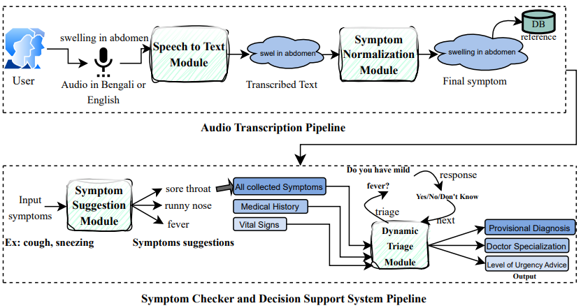
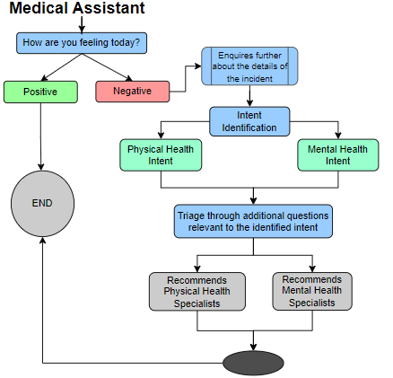
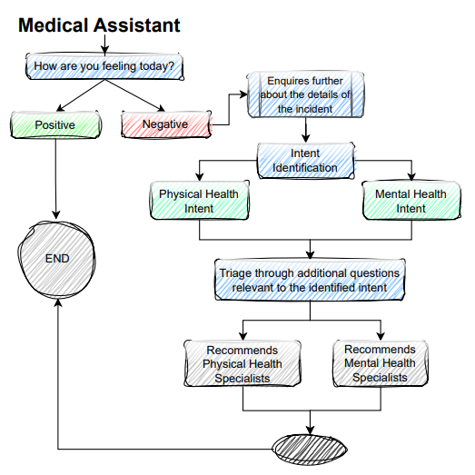
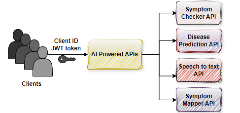

Education
BSc in Computer Science and Engineering
Bangladesh University of Engineering & Technology(BUET)Thesis Project: Bengali Text Recognition Using Deep Learning, under the supervision of Professor Dr. Md. Monirul Islam. For this project, I created a word image dataset from printed documents, annotated it, then trained deep neural networks on it using a variety of methods, including CNN, RNN, LRU, and others.
Coursework: Artificial intelligence, Structured programming language, Object oriented programming language, Data Structures, Algorithms, Database, Computer architecture, Software engineering and information system design, Software development, Basic graph theory and others.
Experience
Software Engineer
MedAi Bangladesh (Part-Time)- Implementation of a backend API service using Django REST Framework
- Storing data within a database structured around a Knowledge Graph paradigm-TypeDB
- Utilizing SQLite and PostgreSQL for managing credentials and client data
- Authentication based on JSON Web Tokens (JWT)
- Integration of payment gateway service
- Integration of SMS service
Research & Development | Data Science | NLP
MedAi Bangladesh (Full-Time)- Curating symptoms across multiple languages, exploring symptom variations, and examining relationships between symptoms.
- Organizing disease data alongside their associations with symptoms.
- Incorporating diverse logic to enhance the precision of the disease prediction and symptom checker modules.
- Medical Assistant Chatbot directing patients to the appropriate specialization.
- (NER) pipeline for extracting relevant information from patient complaints.
- Normalizing symptoms using Bio-Bert, mapping user-provided symptoms to existing symptom entries.
- Patient scenarios used to validate the accuracy of our symptom checker module. Deriving significant insights from these scenarios.
- Extensive expertise in creating intricate CSV files for data science purposes and visualization tasks utilizing the Pandas library.
Cloud Computing
MedAi Bangladesh (Full-Time)- Deploying backend services on EC2 instances.
- Routing all APIs via an API gateway.
- Using an S3 bucket for data storage.
- Utilizing AWS Simple Email Service (SES) for sending emails.
- Hosting our domains utilizing Route53.
Client Management System
MedAi Bangladesh (Full-Time)- A client management system allows users to purchase various Ai-services and become clients.
- Clients gain access to APIs for a specified duration based on package pricing, with daily and total limits on API calls
- Upon registration, clients receive supporting credentials. Django REST Framework and PostgreSQL were employed for this purpose.
Assistant Porgrammer
Janata Bank Ltd.I secured a position in a government bank through a rigorous and highly competitive selection process. However, I found that the role lacked the technical challenges I seek in my career. Consequently, I made a bold decision to leave the position in pursuit of opportunities that allow me to continuously learn and apply my technical skills to real-world problems.
Lecturer
Bangladesh Institute of Science & Technology (Part-Time)- Teaching theory classes and lab sessionals
- Preparing exam questions and administering tests
Tech Stack
Programming Languages
- Python
- C, C++
- Java
- LaTeX
- SQL, TypeQL, PostgreSQL
- Bash
Libraries/Farmeworks
- Django Rest Framework
- Pandas
- Keras, Tensorflow
- Transformers
- Matplotlib, NumPy
- OpenCV
- Sphinx
- Beautifulsoup
AWS
- AWS EC2 Instances
- AWS API Gateway
- Route53, DNS
- S3 Bucket, Elsastic IPs
- AMI, SES
NLP
- NER
- Rasa
- NLU
- LLM
- NLTK
Tools & OS
- Gunicorn, Nginx
- Git
- Jira, Confluence
- Linux, Windows
Interests
- Natural Language Processing
- Bio-Medical Informatics
- Ai-Driven Software Systems
- Large Language Models
- Human Computer Interaction
- Bioinformatics
Publications
Automatic Speech Recognition for Biomedical Data in Bengali Language
MedAi: A Multilingual Digital Platform for AI-Driven Inclusive Primary Care Triage and Health Management
1.MedAI Ltd. Uk 2. Central Police Hospital, Bangladesh 3. National Health Services 4. University of Birmingham, UKNazmun Nahar*1, Sumaiya Tasnia Khan*2, Shariar Kabir*1, Suparna Das*3, Shyamasree Saha*1, Mamunur Rashid*4
Projects
Multilingual Symptom Checker & Disease Prognosis Tool
This symptom checker module serves as an intelligent tool that facilitates the symptom selection process by suggesting relevant symptoms based on the input provided by the patient.
Once the patient has completed entering their symptoms, the module prompts additional questions tailored to the patient's responses (yes, no, or don't know). Subsequently, it presents provisional diagnoses along with pertinent specialization recommendations, guiding the patient towards the appropriate healthcare professional.

Medical Assistant Chatbot
The medical assistant chatbot discerns the user's mood and offers general illness options if the mood is suboptimal. It then tailors additional questions based on the identified intent of the chosen option and ultimately suggests whether the user should consult a physical health specialist or a mental health specialist.

Symptom Normalization
While there are variations of the same symptoms in both Bengali and English, it's impractical to encompass all potential variations. Therefore, this module aligns user-provided symptoms with our existing database.
We employ a BERT model for sentence embeddings, specifically leveraging Bio-BERT for superior performance with medical data. To ensure accuracy, we utilize a combination of sentence similarity scores and organ matching. This prevents symptoms specified for one organ from being erroneously matched to another organ solely based on similarities in sentence structure.

Client Management System
Created a client management system allowing authorized clients to access our AI-powered services. Implemented JWT-based authentication, enabling clients to purchase services for customized durations according to available packages.

Bengali Clinical NER (In progress)
Due to the limited availability of conversational medical data in Bengali, our goal is to gather medical data, annotate it, and fine-tune a Large Language Model (LLM) for Named Entity Recognition (NER) of entities in the medical domain.
This project is currently in progress, with the objective of extracting medical data from conversations between doctors and patients. The data includes vital signs such as blood pressure, pulse rate, and temperature, as well as existing diseases, current symptoms, and diagnostic test information.
Blog
Other Activities
In addition to my professional endeavors, I also enjoy writing educational blogs on platforms such as Medium.